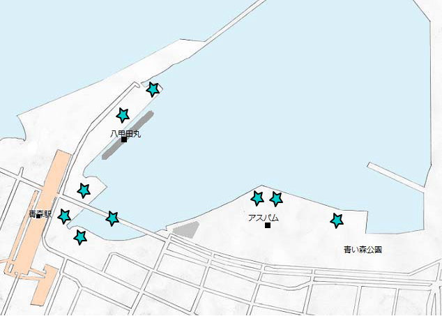
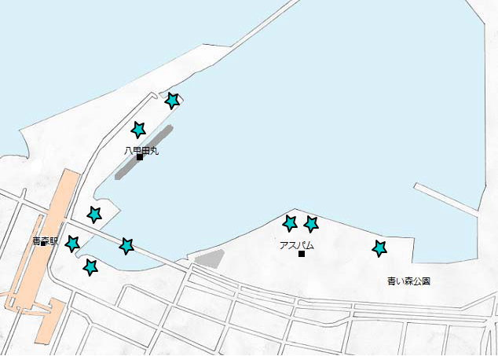

八甲田丸
青函連絡船メモリアルシップ八甲田丸はかつて日本国有鉄道及び北海道旅客鉄道の青函航路に就役していた八甲田丸の船体をほぼ往時のまま利用して展示した博物館船です。
青森県観光物産館アスパム
アスパムの三角形は「青森」の頭文字である「A」をかたどったものです。
展望室やレストラン、多目的室を併設する他、津軽三味線の演奏などさまざまなイベントが開催されます。



青函連絡船メモリアルシップ八甲田丸はかつて日本国有鉄道及び北海道旅客鉄道の青函航路に就役していた八甲田丸の船体をほぼ往時のまま利用して展示した博物館船です。
アスパムの三角形は「青森」の頭文字である「A」をかたどったものです。
展望室やレストラン、多目的室を併設する他、津軽三味線の演奏などさまざまなイベントが開催されます。